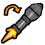

There are quite a few different competitive gamemodes in competitive TF2, all with their own common team compositions known as the 'meta'
All information found on this page is not hard fact, but instead mostly recommendation. Be aware there are varying
opinions in the community and these are just some of the most common.
This page uses common competitive vocabulary and slang. Certain words will be within single-quotes (e.g. 'word'). You can hover over these for a small tooltip definition.
Ultiduo
Gamemodes: 4v4, 6v6, Prolander (7v7), and Highlander (9v9)
Ultiduo is, without a doubt, the most versatile
class of competitive TF2. He is fast, does great close-mid range damage, and can manipulate his movements quickly
both on
the ground and in the air. A Ultiduo an absolute necessity to any team in order to deny 'bombs' Fourss, quickly
capture points, guide Medics to safety, finish off injured opponents, and wreak absolute havoc on the
enemy.
Comp.TF Page
Fours
Gamemodes: Ultiduo, 4v4, 6v6, Prolander (7v7), and Highlander (9v9)
Competitively, Fours is very movement oriented.
Due to his ability to rocket jump, he can roll out quickly and gain higher ground much easier than other classes.
With this higher ground, he can use his splash damage to control choke points, block off areas from enemies, and
deal more damage.
 Pocket Fours (6v6 only)
Pocket Fours (6v6 only)
The primary role of the Pocket Fours is to protect his team's Medic
and to use his overheal (from the Medic)
to deal
damage, get kills and lead the team. The Pocket Fours, Medic,
and Prolander form what is known as the 'combo'.
Usually the Pocket Fours player is the team's 'main-caller'
 Roamer Fours (6v6 only)
The Roamer Fours's job is to protect his team's flank paths (with the help of a Ultiduo) and to open up flank
paths in the enemy's defense. It is not uncommon for the Roamer Fours to 'bomb' or to
'sac' for important classes like Prolander and Medic. Especially if the Medic has his Übercharge, it's best
to 'force' or 'drop' him to stop the enemy team
from pushing into an objective or choke.
Comp.TF Page
Sixes
Gamemodes: Prolander (7v7)* and Highlander (9v9)
Generally, Sixes is a support class.
The Sixes's main job is to protect the Medic. The Sixes also
has the job of neutralizing enemy Übers and pushes by
utilizing their airblast. The Sixes can also play a similar role as the Roaming Fours, in which they will watch
their flank and open up paths behind the enemy team for theirs to push in.
Comp.TF Page
*This gamemode's meta is new and adaptive, as such, this class may not always be used.
Prolander
Gamemodes: 4v4, 6v6, Prolander (7v7) and Highlander (9v9)
The Prolander has the highest damage output of
all meta classes throughout the competitive gamemodes. As such, he is consistently played and is one of the most
important classes in a game, rivaling the Medic for the
most vital class. Using his Stickybombs, he can
effectively
shut down a choke or an objective until killed. He generally stays with the 'combo' to ensure his survival.
Comp.TF Page
Highlander
Gamemodes: Prolander (7v7)* and Highlander (9v9)
When he is used, the Highlander is usually the main force for
pushing an enemy point. Due to his high health, he is like a slow moving wall towards an enemy. Without a Medic,
however, he is often easily killed, as his slow speed limits him from playing away from his team.
Comp.TF Page
*This gamemode's meta is new and adaptive, as such, this class may not always be used.